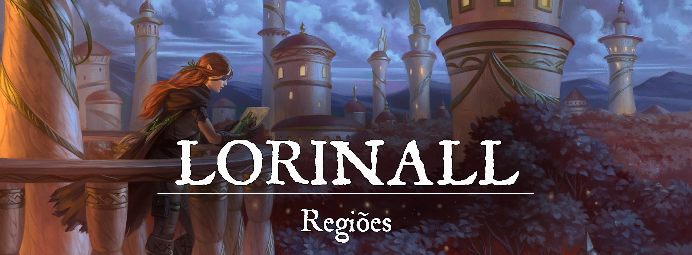

Lorinall
Descrição
A cidade de Lorinall é uma sobrevivente do antigo Império de Elselenor, mas diferente dos elfos que partiram para além do mar, os sobreviventes de Lorinall perseveraram em sua amada cidade. Lorinall é uma das cidades mais antigas de Gronnemar e seus habitantes parecem ainda se recordar de sua história, mesmo que não guardem mais rancor.
Descrição Visual:
unknown (83).png |Lorinall
{kind=link}
Situada dentro da Floresta do Brilho Verdejante, Lorinall é uma cidade isolada e com poucas estradas que a revelam. Seus altos edifícios foram construídos com pedras brancas e mármores, enquanto os menores foram erguidos com a madeira da própria floresta. Apenas algumas construções datam da época do Império de Elselenor. A maioria das construções ruiu com os conflitos que ocorreram na cidade e tiveram que ser reconstruídas.
Lorinall é cercada pelas incontáveis árvores da Floresta do Brilho Verdejante. Muitas dessas árvores, tão altas quanto as construções de Lorinall, fazem parte da decoração da cidade e são vistas como monumentos pelos habitantes. As casas de Lorinall não são construídas dentro das árvores, mas alguns postos avançados situados nas redondezas da cidade, sim.
As noites de Lorinall são sempre bem iluminadas por incontáveis estrelas, mesmo nas sem luar. Muitas das estrelas e constelações vistas em Lorinall apenas podem ser vistas dentro da própria cidade. E não bastando a luz das estrelas, Lorinall ainda conta com vagalumes, plantas luminosas e lanternas com luzes mágicas para iluminar o caminho de cada habitante ou viajante.
A cidade de Lorinall é bela e radiante, uma fonte de inspiração para qualquer artista que se preze.
Sociedade
População:
Os elfos predominam e governam a cidade de Lorinall. Atrás da população élfica, há os meio-elfos e humanos em grande número. Poucas raças além deles podem ser vistas na cidade.
Cultura:
A cultura de Lorinall gira em torno da própria cultura élfica, mas com muitos detalhes trazidos pelos humanos e outros povos que passaram a viver na cidade. A arte é muito importante em Lorinall e é representada fortemente em suas construções.
Caráter:
Os habitantes de Lorinall costumam receber viajantes de braços abertos, sempre entusiasmados para mostrar o que a cidade tem a oferecer. Costumam ser educados e prezam por sua liberdade.
Datas e Festividades:
Religião:
Lorinall não possui uma religião oficial, pois não são apenas os elfos que vivem e cuidam da cidade. Obviamente, há um espaço muito maior para o panteão élfico, e seus templos com certeza são mais numerosos, mas parte da população venera os deuses do panteão Éryio em seu cotidiano. Os deuses Arachne, Felandaris, Tarwulf, Malk’Uruk e Shargga são proibidos de serem venerados na cidade. A adoração a Arachne, a principal responsável pela morte de Leshay, é um crime passível de morte.
Economia
Lorinall é uma cidade conhecida por sua arte e produtos exóticos, atraindo muitos comerciantes durante o ano inteiro. A cidade vive da caça, da extração de recursos naturais e do comércio de seus produtos exóticos (como remédios, tecidos e componentes mágicos).
Serviços:
Todos os tipos de serviço podem ser encontrados em Lorinall. No entanto, alguns recebem destaque, como é o caso de serviços mágicos e treinamento marcial especializado.
Governo
A cidade de Lorinall é governada por três Chanceleres que recebem seus títulos através da votação do Conselho dos Sábios. Obrigatoriamente, uma das cadeiras dos Chanceleres pertence a um humano.
Poderio Militar:
Lorinall é defendida não apenas por elfos, como também por humanos, meio-elfos e, pasmem, um anão (sim, uma unidade de anão). Os soldados possuem um vasto conhecimento sobre a Floresta do Brilho Verdejante e conseguem se mover com relativa facilidade pela mata. A Manopla Vermelha, uma organização de paladinos da natureza, é uma força extraordinária que serve a cidade de Lorinall. A Floresta do Brilho Verdejante é protegida pelas Plumas de Rouxinol. Os Rouxinóis são patrulheiros abençoados pela natureza, caçadores exímios que exploram os cantos mais densos e escuros da floresta.
Conflito
A Floresta do Brilho Verdejante é protegida pelos patrulheiros e soldados de Lorinall. As pequenas vilas, mesmo que afastadas de Lorinall, são protegidas pelos soldados da cidade. Apenas algumas regiões da floresta não são habitáveis, pois permanecem como lugares amaldiçoados desde a queda do Império de Elselenor. É comum que fantasmas e outros mortos-vivos habitem esses locais amaldiçoados. A floresta costuma ser densa nessas regiões assombradas, fazendo com que luz alguma seja capaz de alcançá-las.
Organizações Relevantes
Locais Relevantes
O Mercado Verdejante: é um grande mercado onde os habitantes de Lorinall podem comprar e vender produtos exóticos, incluindo remédios, tecidos e componentes mágicos. É um dos principais pontos turísticos da cidade.
A Biblioteca dos Sábios: é uma grande biblioteca que contém livros e documentos sobre a história, a cultura e a magia de Lorinall. É frequentemente visitada por estudiosos e aventureiros em busca de conhecimento.
As Casas das Árvores: são construções erguidas nas árvores que circundam a cidade, são usadas como postos avançados para patrulhar a floresta e proteger a cidade.
NPCs Relevantes
Chanceler Amthir: Chanceler Amthir é um elfo sábio e experiente, ele é um dos três Chanceleres que governam a cidade de Lorinall. Ele é conhecido por ser um defensor ferrenho da natureza e da preservação da Floresta do Brilho Verdejante. Ele é o responsável pela proteção e preservação da floresta.
Apesar de não ter vivido durante a época do Império de Elselenor, Amthir tem um grande conhecimento histórico sobre a cidade e a floresta, tendo estudado cuidadosamente a história e a cultura de Lorinall. Ele sabe que a floresta é uma parte fundamental da identidade da cidade e que é essencial preservá-la para que a cidade possa sobreviver e prosperar.
Ele é um líder carismático e justo, sempre preocupado com o bem-estar de todos os habitantes de Lorinall, sejam eles elfos, meio-elfos ou humanos. Ele é um grande defensor da diversidade e tolerância, e acredita que todas as raças devem trabalhar juntas para construir um futuro melhor. Ele é conhecido por sua habilidade para negociação e é um grande defensor da paz e estabilidade entre as diferentes raças.
Ele é um líder amado e respeitado por todos os habitantes de Lorinall e sua liderança tem sido fundamental para a sobrevivência e prosperidade da cidade. Ele é um líder que sempre está disposto a ouvir as preocupações e sugestões da população e trabalhar com eles para encontrar soluções. Ele é um líder que sempre põe a segurança e o bem-estar de sua cidade e sua floresta acima de tudo.
Chanceler Nasha: Chanceler Nasha é uma meia-elfa jovem e ambiciosa, ela é uma das três chanceleres que governam a cidade de Lorinall. Ela é conhecida por sua inteligência e habilidade com a magia, especialmente com a magia de cura. Ela é uma membro importante da Ordem dos Curandeiros, organização responsável por cuidar da saúde e bem-estar dos habitantes de Lorinall.
Nasha é uma líder carismática e dedicada, sempre disposta a fazer o que for preciso para garantir que a cidade e sua população estejam seguras e saudáveis. Ela é conhecida por sua compaixão e habilidade para se comunicar com as pessoas, o que a torna uma líder muito popular entre os habitantes da cidade.
Ela é uma defensora ferrenha dos direitos dos habitantes de Lorinall, especialmente os mais vulneráveis, como os idosos e as crianças. Ela tem um grande interesse na educação e na formação de jovens, e é responsável por garantir que a cidade tenha uma boa estrutura de ensino.
Ela é também conhecida por seu senso de justiça e honestidade, ela é sempre justa e honesta nas suas decisões e não tem medo de tomar decisões difíceis. Ela é uma líder dedicada e honesta, que sempre põe o interesse da cidade e da população acima de tudo.
Chanceler Thrain: Chanceler Thrain é um humano nobre e valente, ele é um dos três chanceleres que governam a cidade de Lorinall. Ele é conhecido por ser um líder da Manopla Vermelha, organização de paladinos da natureza responsável por proteger e preservar a Floresta do Brilho Verdejante. Ele é um guerreiro experiente e um defensor ferrenho da natureza e da preservação dos recursos naturais.
Thrain é um líder carismático e determinado, sempre disposto a tomar medidas para garantir a segurança e a sobrevivência de Lorinall e sua floresta. Ele é respeitado por sua coragem e habilidade como guerreiro, e é conhecido por sua capacidade de liderar e motivar suas tropas.
Ele é um defensor da diversidade e tolerância, e acredita que todas as raças devem trabalhar juntas para construir um futuro melhor. Ele tem um grande respeito pelos elfos e sua cultura, e acredita que a preservação da floresta é fundamental para a sobrevivência e prosperidade da cidade.
Ele é um líder amado e respeitado por todos os habitantes de Lorinall, especialmente pelos membros da Manopla Vermelha. Ele é um líder justo e honesto, sempre disposto a ouvir as preocupações e sugestões da população e trabalhar com eles para encontrar soluções. Ele é um líder que sempre põe a segurança e o bem-estar de sua cidade e sua floresta acima de tudo.
Origem
Lorinall foi uma das maiores e mais importantes cidades élficas da época do Império de Elselenor. Os elfos frequentemente faziam viagens para acolher as jovens raças que chegavam ao mundo (mesmo que nem todos tivessem espaço dentro do Império), e as traziam em segurança para Lorinall. A maioria dos acolhidos decidia servir aos elfos em tarefas mundanas em troca de comida e segurança. E assim foi por milênios, até a morte de Leshay e a queda do Império de Elselenor.
A morte de uma das deusas mais importantes do panteão e a queda de outra resultou uma catástrofe em cada cidade élfica. O poder do Império ameaçou ruir, mas os elfos, mesmo consumidos pelo luto, mantiveram-se fortes o suficiente para resistir mais algum tempo. Foi então que ocorreu o Descontrole da Magia e incontáveis vidas foram perdidas em um piscar de olhos. A magia dos elfos, um dos últimos recursos para manter a força do Império, enfraqueceu e as cidades começaram a desmoronar. A perda de incontáveis vidas élficas e a morte de uma importante deusa foi o estopim para a queda do Império de Elselenor. As cidades élficas começaram a ser saqueadas ou a desmoronar pela falta de magia. Os elfos sobreviventes fugiram para a floresta, para o mar ou para o subterrâneo. Alguns foram envenenados pela traição que acometeu Leshay e outros se perderam completamente da Melodia Élfica que os criou. Era o fim do Império de Elselenor e o começo do reinado de muitas outras raças.
Tamanha catástrofe também atingiu a cidade de Lorinall, e muitos elfos morreram ou fugiram. Os poucos sobreviventes que permaneceram na cidade não eram capazes de mantê-la ou sequer proteger aqueles que acolheram. Rebeliões ocorreram em muitas das cidades élficas, fazendo com que os acolhidos se tornassem os senhores de sua própria fortaleza. Porém, isso não ocorreu em Lorinall. A gentileza dos elfos foi retribuída por seus protegidos, que decidiram defendê-los e acolhê-los em seu momento de perda. Essas pessoas caçaram sua própria comida e defenderam as muralhas de Lorinall com afinco. Os elfos que tinham a mínima força nos ossos para lutar se juntaram a eles e, juntos, protegeram a cidade de Lorinall a todo custo.
Foi apenas quando novos deuses élficos ascenderam que os elfos voltaram a se fortalecer. Novas luzes passaram a guiar seus caminhos e a Melodia Élfica não estava mais tão distante. No entanto, mesmo com o reerguer dos elfos, o antigo Império de Elselenor estava perdido e a magia, enfraquecida (o Controle da Magia já havia ocorrido nessa época). Muita da cultura élfica foi perdida durante a queda do Império, mesmo em Lorinall que prevaleceu após a catástrofe. A cidade de Lorinall jazia parcialmente arruinada quando os elfos se reergueram, mas ainda era habitável. Ao lado daqueles que lutaram para defendê-la, os elfos reconstruíram Lorinall e, posteriormente, declararam-na como parte de Gronnemar (os elfos de Lorinall são considerados gronnemari por conta disso).
A maioria dos que lutaram para defender Lorinall eram humanos, portanto, atualmente uma das cadeiras de Chanceler da cidade pertence a um humano (que também representa a população não-elfo da cidade). Lorinall se manteve afastada dos grandes conflitos que assolaram Gronnemar posteriormente, assumindo sempre uma postura neutra em relação às guerras. Foram poucas as vezes em que Lorinall interveio diretamente em uma guerra.